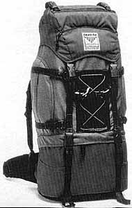

Backpacking Hints
Backpacking Asia and Africa
One Backpacker's Thoughts ... How have things changed? ...
If you are planning an inexpensive trip, here are some of my thoughts for this part of the world.
Modify to suit your own personality. And please put me on distribution for your travelogue!
============== GLAD I HAD THESE ITEMS =============

============== THINGS TO LEAVE HOME ==============
===================== VISAs ====================
============= DISCUSSION and POINTERS =============
============== THE PELNI EXPERIENCE ==============
============== INTERNATIONAL FERRIES =============
==================== COSTS ====================
Questions? Contact me at the Juno.com address Dancer2SEAsia. Other Special Subjects:
Visa requirements change: Some countries offer Visa exempt stutus to travelers from selet countries -- show up at the immigration booth, your passport is examined/stamped for 14 to 60 days travel -- no cost. Other countries require many details in advance such as date of arrival. Your visa will ONLY be for the (~30 day) period starting on that date! Fees also vary depending on passport country. Obtaining a visa in person at a counsulate may be the cheapest approach, but making a mistake can be costly. Finding a reliable visa agent may save you time, and in some rare cases, money too.
Postage rates change: Malaysia was cheapest, now most expensive. Singapore cheapest, but Thailand fastest.
Ask for better currency exchange rates for bills and (American Express) traveler's checks of larger demonination (i.e. US $50, $100).
IMPORTANT: ONLY CARRY THE MOST RECENTLY ISSUED CURRENCY!
Try to obtain a Pelni Schedule before arriving in Indonesia -- most helpful for long-range planning. The schedule gives sailing times for each ship, as well as interruptions for overhaul. Pelni has a web site (www.pelni.co.id) -- hopefully it will expand to show more schedule details.
Their are six classes of Pelni offices; ranging from "Cabang A" which can sell tickets for any from/to destination, to "Cabang D" and "Sub Cabang" offices, which are highly restricted in the types of tickets sold.
If you must travel "Ekonomi Kelas", bring food for meals or buy at snack bar on top deck, back of ship. (Food is also sold by vendors plying the decks on some journeys.) Bring ear plugs to use while sleeping (4 am call to prayer), and also while eating in snack bar (loud music).
If traveling alone, make friends immediately for security reasons. You can't watch your backpack while in the bathroom, sleeping, etc. Security is the single most important reason to NOT travel "Ekonomi Kelas".
The show time is several hours before departure to facilitate passport control (and customs?). My experience is between Dumai and Melaka. Had to surrender passport at the ferry office in town several hours before departure, but then it was returned to me in less than 30 minutes, after which I was free to walk around town for another hour or so. When boarding the ferry, just a cursory look for declarations was made, except for folks obviously carrying commercial items. On the ferry, the passports were again collected for just a short time, then returned. Upon arrival at destination, the passengers just walk off the dock -- all formalities have been completed.
After paying for round trip airfare and medical necessities, my budget was $100 per week in 1999. But costs continue to rise, and were double that in 2007. If traveling as a couple, lodging costs will only be slightly less. By spring 2016, this site should update costs again.
Bamboo Homes